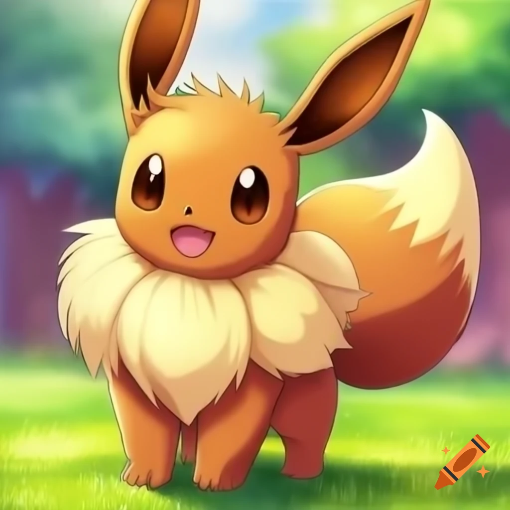
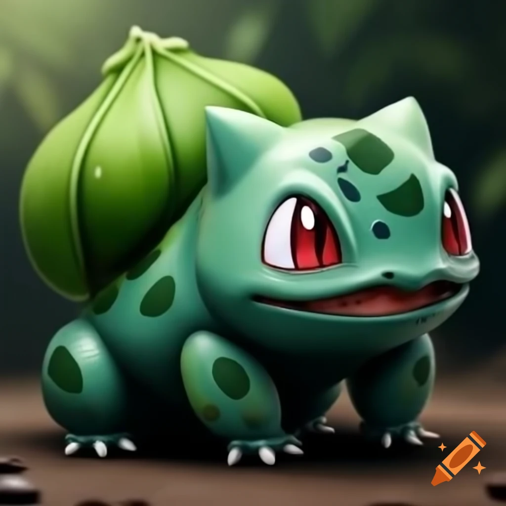
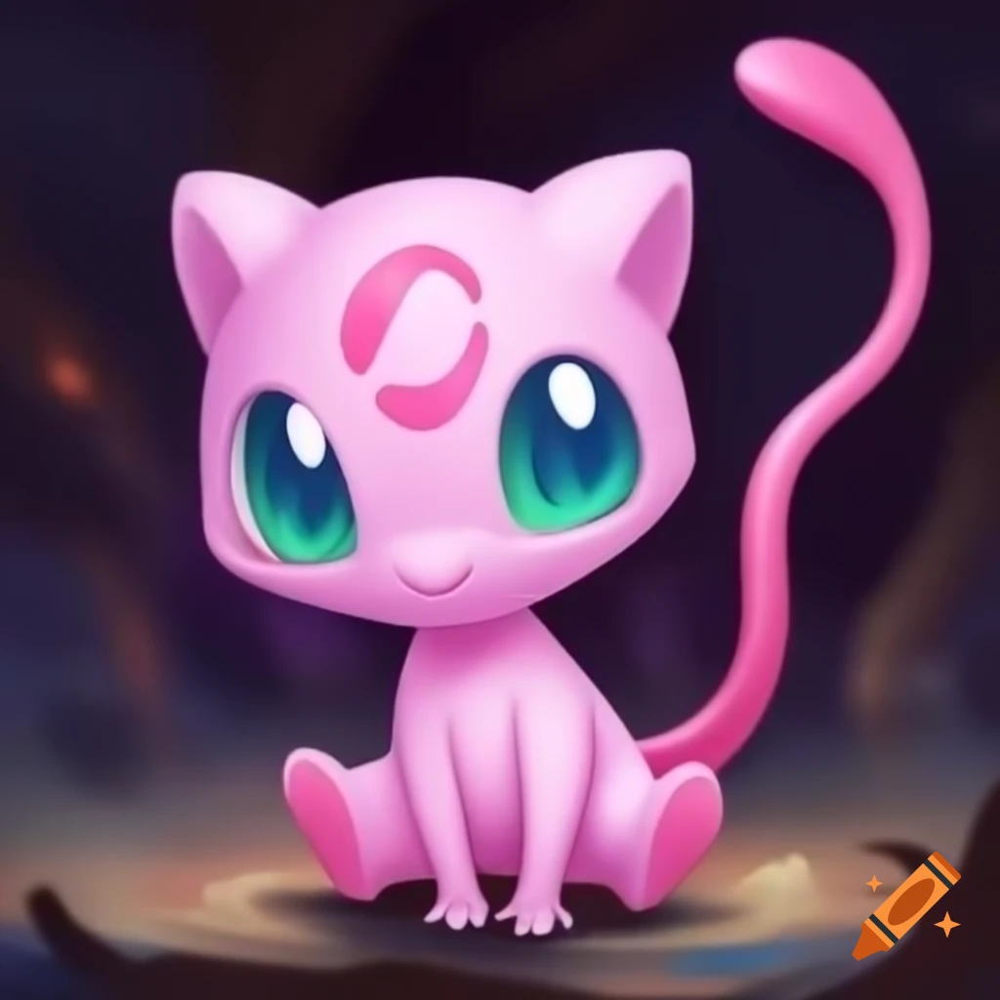
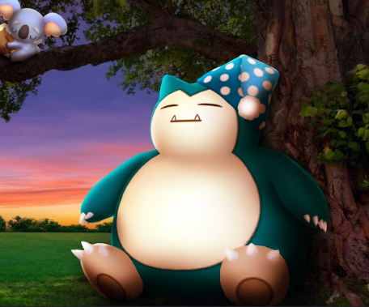
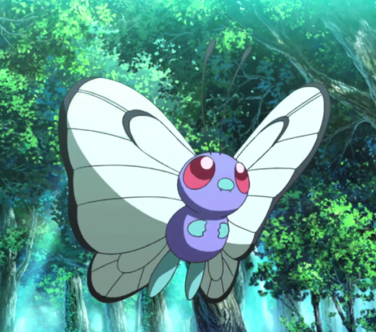
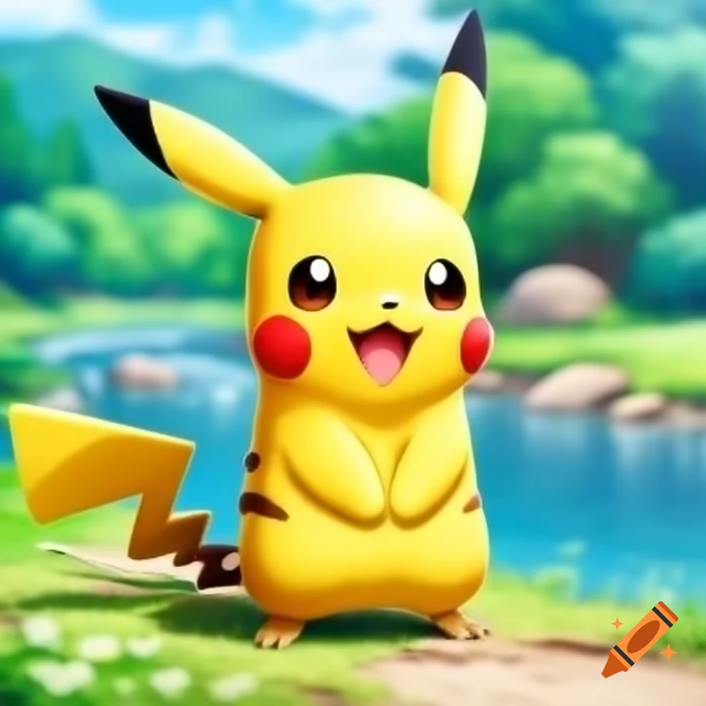
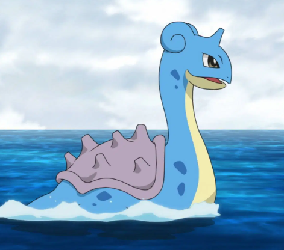

Eevee
Eevee está basado en un pequeño zorro. Posee largas orejas puntiagudas
y una cola en forma de pincel.

Bulvasaur
Bulbasaur es un pequeño Pokémon cuadrúpedo de tipo planta y venenoso pero muy bueno.

Mew
Mew es un Pokémon muy tranquilo y pacífico, aunque también juguetón y travieso por naturaleza.

Snorlax
Snorlax es de gran tamaño y con pelaje adiamantado a poco pulir. Se caracteriza por limitarse a comer y dormir.

Butterfly
Butterfly tiene una habilidad especial para encontrar delicioso polen en las flores..

Charmander
Charmander es un pequeño lagarto bípedo. Sus características de fuego son su color de piel y su cola envuelta en llamas.

Pikachu
Pikachu es el más popular de los Pokémon. Parece un pequeño ratón cubierto con un abrigo amarillo.

Lapras
Dotado de una gran inteligencia y capaz de comprender el lenguaje humano. Le gusta surcar los mares.